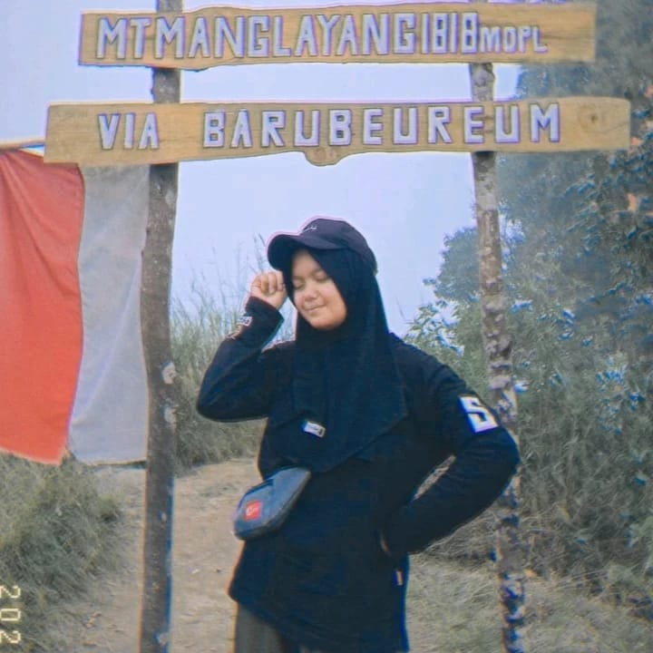

Profile Diri

Siti maryanti
Hallo perkenalkan saya Siti maryanti siswi SMAN 1 Rengasdengklok, saya lahir di Karawang 16 januari 2007. Hobby saya Hiking, berenang, kuliner.
Pendidikan Formal
- SDN Sampalan 2
- SMPN 2 kutawaluya
- SMAN 1 Rengasdengklok
Pendidikan Non Formal
- Mengikuti kegiatan Pramuka
Organisasi
- Pramuka
- Pramuka penegak laksana
Pencapaian SKU/TKU

Pencapaian Penegak Bantara
Berikut ini adalah Proses pencapaian SKU tingkat Bantara dan Laksana


ini bukti syarat kecakapan bantara
Kenaikan tingkat penegak laksana


Pencapaian SKK/TKK

Dokumentasi pencapaian bidang-bidang TKK
Bidang agama mental,moral,spritual pembentukan pribadi dan watak.
ini adalah bidang tkk shalat dan saya mengetahui beberapa bacaan salat dan qori dalam bidang beberapa tkk


dapat memahami syarat syarat rukun dan membatalkan salat.

ini bukti tkk pencapaian salat zenajah

telah melatih sedikitnya seorang pramuka siaga,sehingga mencapai tkk qori.
Bidang patriotisme dan seni budaya
ini adalah bukti dokumentasi tkk pencapaian tkk saya dalam bidang patriotisme dan seni budaya.

ini dapat menyanyikan dua buah lagu nasional/daerah dan dua buah lagu pramuka ,baik notasi maupun angka angkanya.


dapat mengatur isi dan menghias ruangan secara sederhana tetapi berseni tetapi dengan memperhatikan posisi.
Bidang ketangkasan dan kesehatan
ini bukti dokumentasi beberapa bidang ketangkasan dan kesehatan saya dapat mengetahui gaya berenang dan gerak jalan.


terjun dengan baik dalam tepi kolam.


ini bukti dokumentasi tkk pencapaian gerak jalan, dalam gerak jalan ini saya jadi tahu tentang gerak jalan yang sangat jauh, yg bertempat di jalan rawamerta.
Bidang keterampilan dan teknik pembangunan
!

ini bukti dokumentasi tkk ternak kelinci saya jdi tau cara merawat kelinci untuk tingkat purwa,madya dan utama.


dapat membuat dapur dan tahu persyarataanya.
Bidang sosial, perikemansiaan, gotong-royong, ketertiban masyarakat, perdamaian dunia dan lingkngan hidup
ini adalah beberapa bidang tkk dalam bidang perikemanusiaan,gotong royong ,ketertiban masyarakat , perdamaian dunia dan lingkungan hidup,tkk dibawah pengaman lalu lintas.

dapat memberi penjelasan kepada orang lain tentang peraturan Lalulintas.

Keikutsertaan Kegiatan
Kegiatan PAM Lebaran/Karya Bakti Pramuka
ini adalah bukti dokumentasi kegiatan pam lebaran bertempat di jalan baru karawang,untuk menghindari arus kemacetan.

Kegiatan SAKA Bakti Husada
ini bukti kegiatan saka bakti husada, pada tanggal 15 juni 2024 yang bertempat di puskesmas kutawaluya.

ini bukti saka bakti husada pada tanggal 15 juni 2024


ini bukti dokumentasi kegiatan saka bakti husada
Kegiatan yang dilaksanakan digunung manglayang
ini kegiataan pengembaraan ,dan perkemahan yang di laksanakan di gunung manglayang.


kegiatan Lkp 14 yang bertempat di kampus 11 april sumedang.


Kegiatan Gema Ramadhan
ini bukti dokumentasi gema ramadhan bertempat ada di dua tempat berada di sman 1 rawamerta dan koramil rengasdengklok.


kegiatan gema ramadhan koramil


gema ramadhan sman 1 lawamerta
Legalitas
Telah Menyelesaikan Tingkatan akhir Pramuka Penegak
Telah Menyelesaikan tingkatan TKK pada 5 bidang kecakapan, mulai dari tingkat Purwa, Madya dan ada beberapa di tingkat Utama

sedikitnya telah mengikuti perkemahan sekali semalem.
dapat membuat dapur dan tahu persyarataanya

ini bukti tkk pencapaian ppgd saya tingkat purwa, madya dan utama yang bertempat di sekolah.

dapat menjahit ,menisik kain yang robek memanjang.
dapat memahami syarat syarat rukun dan yang membatalkan salat.
Project Produktif
ini adalah bukti dokumentasi project produktif tanaman.
 video project produktif
video project produktif
Penguasaan bahasa asing
ini adalah bukti dokumentasi wawancara video bahasa asing.
video bahasa asing